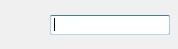

| それぞれの意味と使い方 | 接続の仕方 |
| キーの消し方 | キーの入力間隔をコンピュータの設定に合わせる |
| DirectInputのキー入力にする | モーションの振る強さ |
| 前回の設定を起動時に適用する | 接続タイムアウトの設定 |
| アイコンをタスクトレイに入れる | 切り替えキー |
それぞれの意味と使い方
| ①編集中のファイル名 ②設定が変更されて、保存されてないときに(*)がつきます ③メニューです ④タブです ⑤対応させるキーを指定します 枠の中をクリックすると設定のダイアログが表示されます 左のアイコンの指す意味は以下の通りです ：動作が設定されていない ：キーの動作(最大３つまで指定できます) ：マウスの動作 ：ファイルの起動 ：設定の切り替え ⑥Wiiリモコンとの接続の状態を色で表わしています 青色：接続中 赤色：未接続 ⑦接続中ならWiiリモコンの状態が書かれます |
接続の仕方
①はじめにWiiリモコンとパソコンをBluetooth接続しなければなりません
これは使っているBluetoothマネージャーによってやり方が異なるのでここでは説明しません
②メニューの[接続]を押して、WeyとWiiリモコンを接続します
＊Wiiリモコンが２つ以上見つかった場合
Weyは一度に一つしかWiiリモコンを操作することができません(二つ以上同時に操作したい場合はWeyを多重起動してください)
２つ以上見つかった場合は下のようなダイアログが出ます
| 選択中のWiiリモコンのLEDは下のように点滅します |
③接続に成功すればウィンドウの枠の色が青色に変わります
キーの入力の仕方
・例に、WiiリモコンのキーとパソコンのZキーを対応させたいと思います①キーの設定ウィンドウを表示して上の入力ボックスにフォーカスを入れます

②パソコンのZキーを押したら完了です
・最大３つまでキーを登録させることが可能です
登録させるには入力ボックスにフォーカスを合わせて目的のキーを押すだけです
*キーは左から順に押されていきます
なので、「Z(大文字)」を登録したい場合は {Shift}{Z} となります
もし、逆に登録してキーを押し続けると下のようになります
zZZZZZZZZZZZZZZZZZZZZ…
キーの消し方
①消したいキーの上をダブルクリックします②上の状態でBackspaceかDeleteキーを押すだけです
一度に全部消す場合は「キー全削除」ボタンを押してください
キーの入力間隔をコンピュータの設定に合わせる
通常はWeyは可能な限り連続でキーを押し続けますこの項目にチェックを入れると、お使いのコンピュータと同じ表示間隔でキーを入力します
ゲームなどにWeyを使う場合はこの項目ははずした方がいいです
DirectInputのキー入力にする
PCゲームによってはキーの入力情報の取得にDirectInputを使っている場合がありますそういったPCゲームにはこの項目にチェックをしてください
この設定はキー入力にのみ適用されます(マウスには適用されません)
モーションの振る強さ
Wiiリモコンとヌンチャクの振る強さを設定できます「弱め」を選択すれば、軽く振るだけで反応します
「強め」を選択すれば、強く振らなければ反応しません
「弱め」を使うと稀にキーが連続で反応してしまうことがあるので、プレゼンテーションなどでは「強め」を使うことをおすすめします
マウスの動作の設定について
| 指定できる動作は以下の通りです 左クリック ダブりクリック 中クリック 右クリック 上、下、左、右移動 上、下、左、右スクロール 下にある移動量は「上、下、左、右移動」を指定したときのみ有効で、単位はピクセル毎秒です 500から700の範囲が使いやすいと思います アナログキーにこれを指定した場合は、押す強さによって移動する速さをコントロールできます |
前回のWeyに適用させた設定ファイルを起動と同時に読み込んで適用させます
この機能を有効にするには、「Weyの設定」から「前回の設定を起動時に適用する」にチェックを入れてください
バックアップを取っているわけではないので注意してください
Wiiリモコンとの接続がタイムアウトとなる時間を設定します
タイムアウト時間が短いと、通信が遮断されると素早く反応しますが、接続可能な状態にもかかわらず通信が切断されることがあります
タイムアウト時間が長いと、Wiiリモコンと安定した通信ができますが、通信が切断されてもすぐに反応しなくなります
短いよりは長いほうがいいかもしれないです
| 最小化時でも通知領域からWeyの主要な操作が可能です 元に戻すには、 右クリックして「表示」 または ダブルクリックをしてください 起動時からこのような状態にするには「Weyの設定」から、 「最小化した状態から起動する」にチェックを入れてください |
切り替えキーに設定したキーを押した状態にすると、別のキー操作を割り当てることができます
| 左のような設定の例だと、 通常はAボタンを押せば左クリックをしますが、 Bボタンを押しながらAボタンを押すと右クリックになります |